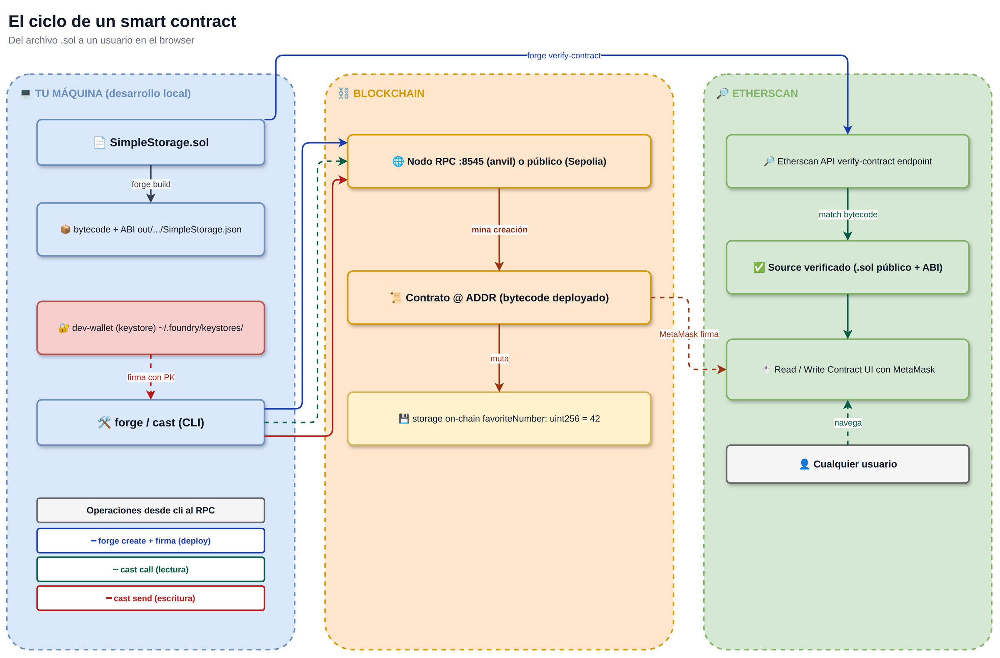
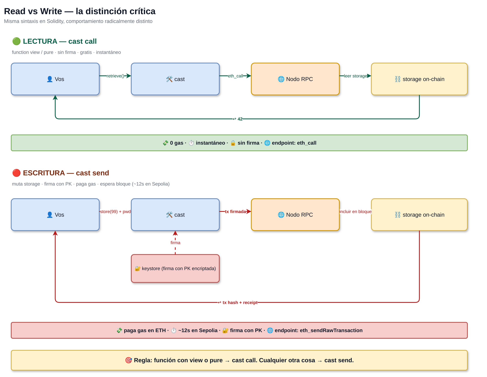
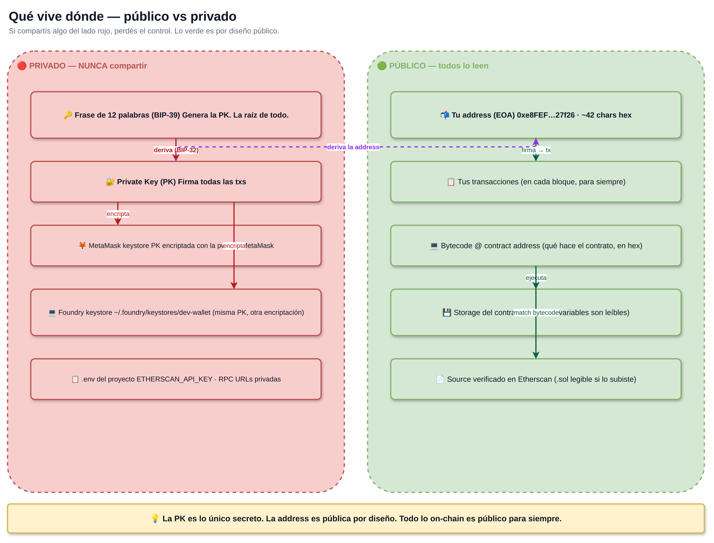
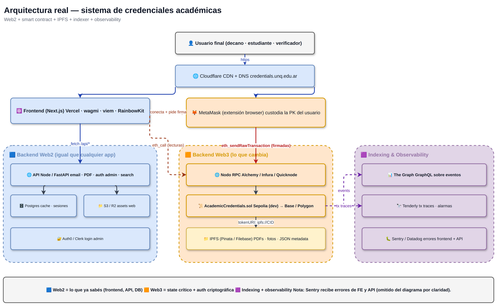
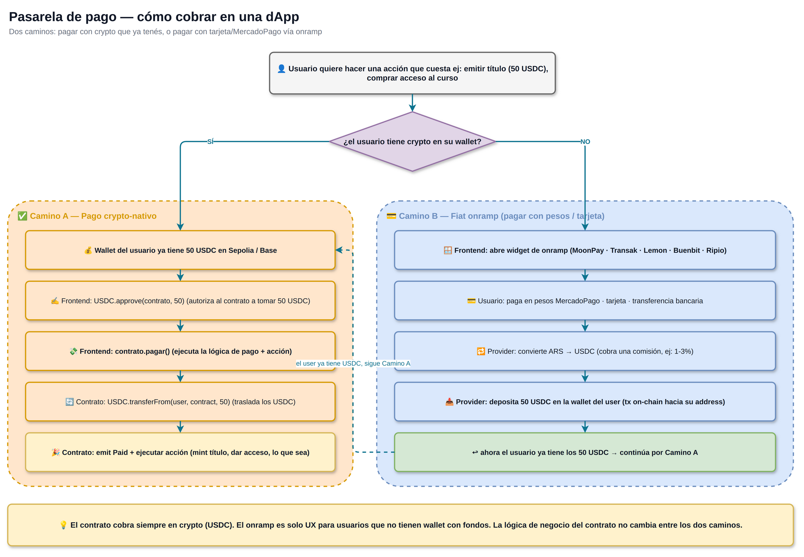

📑 Índice del documento
- Blockchain & Pasarela de Pago — Overview
Blockchain & Pasarela de Pago — Overview
Contexto — recuerden lo que dice el TPC
Recuerden que el core de la asignatura es el desarrollo de un sistema informático, y que independientemente del dominio o tipo de sistema que propongan (e-commerce, plataforma de servicios, marketplace, sistema de reservas, etc.), todos los proyectos deberán incorporar obligatoriamente una pasarela de pago como parte de su arquitectura.
La pasarela debe contemplar el registro y validación de transacciones usando blockchain (simulada o real, según el alcance que defina cada equipo) y modelar correctamente: la conexión entre pagador y receptor, la gestión de transacciones, la confirmación del pago y el registro inmutable de la operación.
El MVP funcional con la red de pagos basada en blockchain representa el 70 % del criterio de evaluación técnica del trabajo.
Estas 4 clases son el camino corto y técnico para llegar ahí: integrar pagos reales en Sepolia (testnet de Ethereum) en su proyecto, sin importar si eligieron VibeCheck, DepFund, RNW o IDEAFY — o cualquier otro dominio.
Analogía rápida: lo que vamos a hacer es igual a integrar MercadoPago en una app — solo que el rail de pago es la blockchain de Ethereum (testnet Sepolia), y el “saldo” del usuario son tokens USDC en su wallet, no pesos en MP.
Cómo se conecta con lo que ya saben
| Lo que YA saben (TP0–TP2) | Cómo lo usan en su sistema con blockchain |
|---|---|
| k3s + Docker (TP0) | Despliegan su frontend + API web2 ahí. El contrato vive en Ethereum, no en su cluster. |
| Selenium scraping (TP1) | Pueden ser la fuente de datos de su sistema (ej: VibeCheck scrapeando Bombo para listar eventos). |
| CI/CD + tests (TP1 P2) | Los tests del contrato Solidity se corren en CI también. Foundry produce reportes que se enchufan en su pipeline. |
| Loki + OpenTelemetry (TP2) | Loguean eventos on-chain y los correlacionan con
logs de su backend. Cada event Paid(...) se mapea a un
span. |
Web3 NO reemplaza Web2 — augmenta. Su backend Node/Python sigue ahí, su frontend sigue ahí, su observabilidad sigue ahí. Lo que se reemplaza es solo:
- MercadoPago → contrato
PaymentGateway.solen Sepolia. - Auth con email+password → firma criptográfica de wallet (SIWE).
- Base de datos para estado crítico (ownership de tokens, balances) → storage on-chain del contrato.
Roadmap (4 clases × ~4 hs)
| Clase | Tema | Lo que se llevan armado |
|---|---|---|
| 1 — Fundamentos + setup | MetaMask + Sepolia + Foundry + un primer contrato
SimpleStorage deployado |
Un contrato propio en Sepolia, verificable en Etherscan |
| 2 — ERC-20 + PaymentGateway | Tokens fungibles (su moneda interna) + contrato
PaymentGateway que cobra USDC + protección contra
reentrancy |
El contrato base que extienden para su proyecto |
| 3 — Frontend + integración | Next.js + wagmi + RainbowKit hablando con su PaymentGateway + onramp testnet | Una dApp deployada en Vercel con MetaMask conectado |
| 4 — NFTs gamificación + Slither | Set Bonus NFT (ERC-721) + análisis estático con Slither + cómo plugar el patrón a VibeCheck/DepFund/RNW/IDEAFY | El stack completo + auditoría |
Diagramas hero
Estos 5 diagramas cubren todo el modelo mental. Recurrir a ellos durante el desarrollo de su sistema.
1 · El ciclo de un smart contract
Del archivo .sol que escribís, al contrato deployado, al
usuario final que lo usa desde el browser. Tres swim-lanes: tu
máquina (donde escribís el código), blockchain
(donde vive el contrato), Etherscan (la UI pública del
contrato).

2 · Read vs Write — la distinción crítica
cast call (lectura, gratis, instantánea) vs
cast send (escritura, firma + gas, espera bloque).
Misma sintaxis en Solidity, comportamiento radicalmente
distinto.
Regla mnemotécnica: si la función dice
viewopure→cast call. Cualquier otra cosa →cast send.

3 · Qué vive dónde — público vs privado
Mapa de qué se puede compartir y qué nunca. Lo rojo (private key,
frase BIP-39, .env) nunca sale de su
máquina. Lo verde (address, txs, bytecode, storage) es público por
diseño — toda la blockchain es leíble por
cualquiera.

4 · Arquitectura real del sistema
Su sistema completo: Frontend (Vercel) + Backend Web2 (k3s) + Smart Contract (Sepolia) + IPFS para archivos pesados + Indexer (The Graph) + Observabilidad (Loki/Tenderly/Sentry).
El contrato es UNA pieza del sistema, no es todo. Vendría siendo el “servicio de pagos” en una app tradicional. El resto (UI, API, BD, monitoreo) sigue siendo lo de siempre.

5 · Pasarela de pago — el corazón del TP
Dos caminos:
- A — Crypto-nativo: el usuario ya tiene USDC. Conecta wallet → approve → pay. Su contrato cobra y emite evento.
- B — Fiat onramp: el usuario llega con tarjeta/MercadoPago/transferencia. Un provider (Lemon, Buenbit, MoonPay) convierte ARS → USDC y deposita en su wallet. Después sigue por camino A.
Insight clave: el contrato siempre cobra en crypto (USDC). El onramp es solo UX para usuarios sin wallet con fondos. La lógica del contrato no cambia entre los dos caminos.

El contrato base que se llevan
Después de la clase 2 todos tienen este patrón en la mano:
// SPDX-License-Identifier: MIT
pragma solidity ^0.8.24;
import {IERC20} from "@openzeppelin/contracts/token/ERC20/IERC20.sol";
import {ReentrancyGuard} from "@openzeppelin/contracts/utils/ReentrancyGuard.sol";
contract PaymentGateway is ReentrancyGuard {
IERC20 public immutable usdc;
address public immutable treasury;
event Paid(address indexed payer, uint256 amount, bytes32 indexed action);
constructor(IERC20 _usdc, address _treasury) {
usdc = _usdc;
treasury = _treasury;
}
function pay(uint256 amount, bytes32 action) external nonReentrant {
require(amount > 0, "amount=0");
require(usdc.transferFrom(msg.sender, treasury, amount), "transfer failed");
emit Paid(msg.sender, amount, action);
_onPaid(msg.sender, amount, action);
}
/// @dev Cada proyecto sobrescribe esto con su lógica:
/// - VibeCheck: mintea ticket NFT
/// - DepFund: emite shares de $DPF
/// - RNW: registra como inversor
/// - IDEAFY: rutea al sub-token del proyecto
function _onPaid(address payer, uint256 amount, bytes32 action) internal virtual {}
}La pasarela es la misma. Lo que cambia es qué pasa
adentro de _onPaid. Cada equipo escribe su propia
subclass.
Stack obligatorio para el TP final
| Pieza | Tecnología | Mainnet/testnet |
|---|---|---|
| Smart contract | Solidity 0.8.24 + OpenZeppelin + Foundry | Sepolia testnet |
| Stablecoin | USDC oficial de Circle en Sepolia (0x1c7D…7238) |
Sepolia |
| Frontend | Next.js + wagmi + viem + RainbowKit | Vercel (URL pública real) |
| Wallet | MetaMask (recomendado) o WalletConnect | Sepolia |
| Onramp testnet | TestnetOnramp custom (clase 3) | Sepolia |
| Indexer (opcional) | The Graph subgraph | Hosted Service |
| Observabilidad | Loki/Tenderly/Sentry (lo que ya tienen de TP2) | — |
| Backend Web2 | Node/Python en k3s (lo que ya tienen) | — |
Material relacionado
- Programa del Seminario — el doc que define el TP
- TP 0 — Kubernetes
- TP 1 — Selenium MercadoLibre
- TP 2 — Observabilidad
- Próximamente: las 4 clases de blockchain (links cuando estén publicadas).